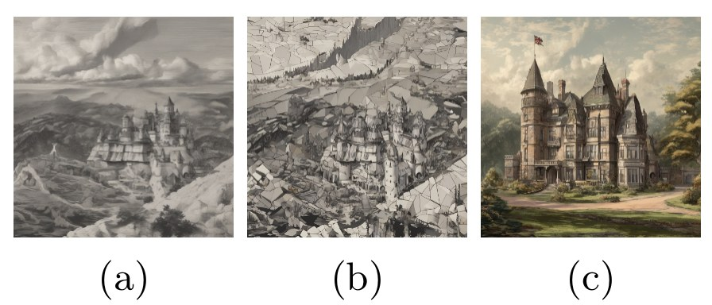
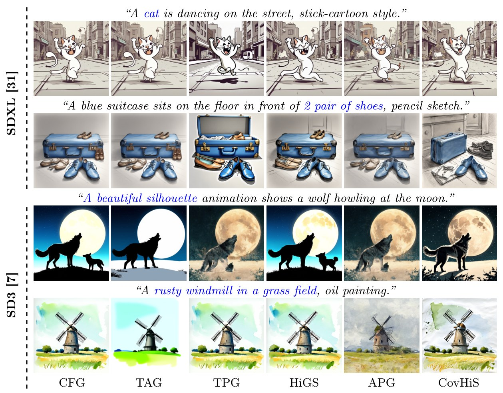
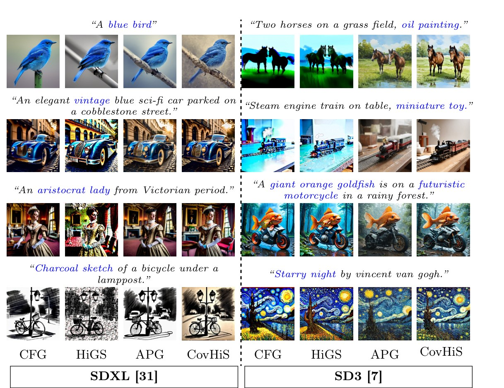
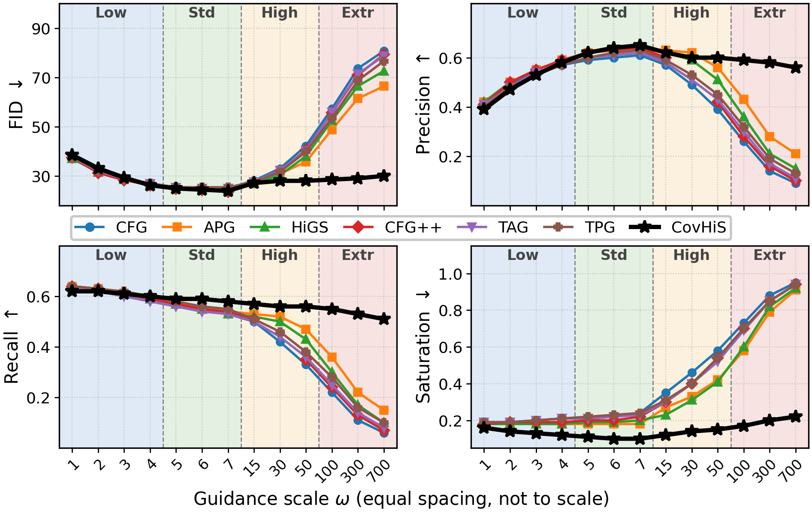
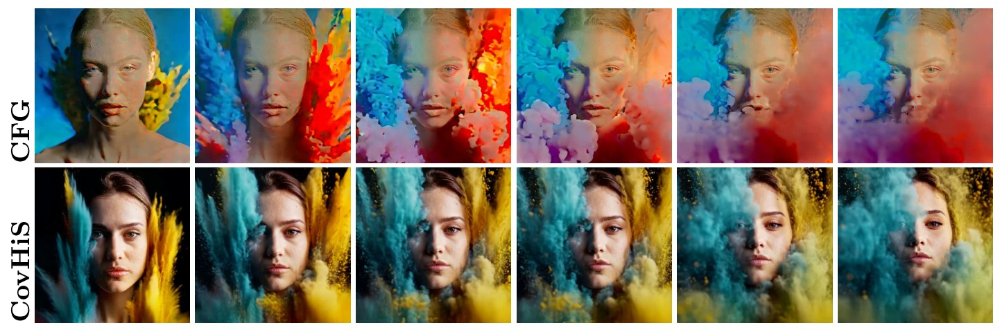
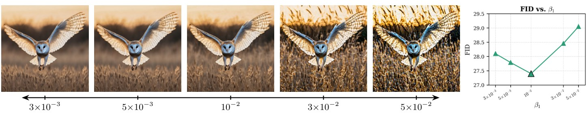
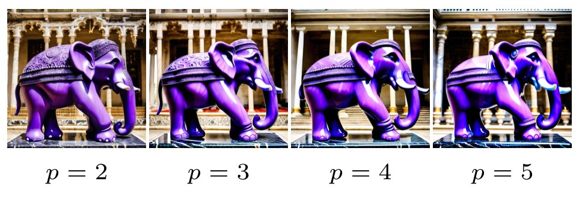
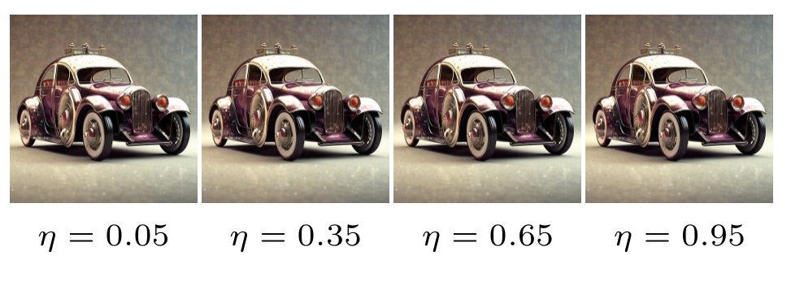

Classifier-free guidance (CFG) scale is critical to sample-generation performance in diffusion models. Increasing the guidance scale results in high-quality generation but also induces artifacts like saturation or burnout, whereas decreasing the guidance scale yields crisper details. To enable saturation-free, scale-adaptive, high-quality generation, we propose a training-free CFG correction framework, CovHiS. This approach operates in two folds: first, it uses residual guidance history to identify a low-rank recurrent subspace for saturation-aware guidance calibration; second, it uses conditional covariance-guided tangent refinement to restore prompt-specific structural details. Extensive experiments across diverse diffusion backbones, samplers, domains and human evaluations show that CovHiS consistently generates high-quality samples with fine structural details.
Classifier-free guidance adds ω times the conditional–unconditional residual \(d_t = \hat{\epsilon}_c - \hat{\epsilon}_\varnothing\) at every denoising step. Existing corrections reshape this residual through geometric projection, temporal refinement or attention perturbation, but whatever survives the correction is still multiplied by ω. The update keeps growing with the scale, so the failure is only pushed to a larger ω.
We see the damage as temporal. A large update applied once is something the sampler can recover from. The same update applied coherently over many consecutive steps becomes a steady force that drags the trajectory into saturation and off-manifold drift. Within a single step the two cases look identical, so only the trajectory’s recent history can tell them apart. CovHiS uses that history to find and damp recurring residual directions, and it bounds the final guidance update so that it no longer grows directly with ω.
CovHiS is training-free and plug-and-play. At every sampling step it runs two stages: Stage I stabilizes guidance at high scales, and Stage II recovers the prompt-specific detail that stabilization can soften.
Stage I
History-orthogonal residual filtering (HoRF). CovHiS first forms a momentum residual with a negative coefficient, which discourages alignment with the previous step’s direction:
It keeps the last \(k_t \le W\) residuals, stacks them into a history matrix \(H_t = [d_{t-1}, \dots, d_{t-k}]^\top = U_t \Sigma_t V_t^\top\), and takes the top-\(r\) right singular vectors \(Q_t\). These span the low-rank subspace of directions that guidance has been reinforcing step after step. The history-parallel part of \(m_t\) is attenuated by \(\eta\), while the history-orthogonal part, which carries new prompt-driven corrections, passes through unchanged:
Adaptive guidance calibration. Because \(s_t\) is still multiplied by ω, CovHiS measures the relative size of the guided update and maps it into a guidance budget \(\gamma \in (0, 1]\). Large updates are compressed to \(\gamma\), and small ones are mapped to \(\sqrt{\gamma q_t}\):
The effective guidance displacement now depends on the budget \(\gamma\) instead of growing with the raw scale ω.
Stage II
Taking the HoRF-CFG prediction as the base \(P_t\), CovHiS adds a momentum term on the unconditional prediction, \(\hat{P}_t = P_t + \mathcal{M}(\hat{\epsilon}_\varnothing : \beta_1)\), which already brings back part of the structure.
Conditional covariance transform. CovHiS eigendecomposes the covariance of the conditional prediction, \(\psi_t = \Phi_t \Lambda_t \Phi_t^\top\), and reweights its dominant eigen-directions so that prompt-relevant channel directions are emphasized (we use \(\kappa = 1\), \(p = 2\)). The result, \(d_t^{\text{cov}}\), is the structural detail revealed beyond the raw prompt residual:
Tangential detail injection. Adding \(d_t^{\text{cov}}\) directly could push the trajectory off course, so CovHiS removes its radial part along the unconditional prediction and injects only the tangential part, capped by a relative norm budget:

We generate 30K images from MS-COCO validation captions and compare CovHiS with CFG, APG, HiGS, CFG++, TAG, TPG, SAG, PAG, SEG and ASAG. All methods use matched seeds, resolutions, sampling steps and initial latents, with baseline settings taken from their official recommendations.


SDXL
| Method | FID ↓ | Precision ↑ | Recall ↑ | Saturation ↓ | Contrast ↓ | |||||
|---|---|---|---|---|---|---|---|---|---|---|
| ω = 7.5 | ω = 30.5 | ω = 7.5 | ω = 30.5 | ω = 7.5 | ω = 30.5 | ω = 7.5 | ω = 30.5 | ω = 7.5 | ω = 30.5 | |
| CFG | 27.83 | 33.55 | 0.61 | 0.49 | 0.53 | 0.42 | 0.28 | 0.46 | 0.23 | 0.37 |
| APG | 27.35 | 29.08 | 0.64 | 0.62 | 0.54 | 0.52 | 0.18 | 0.23 | 0.17 | 0.21 |
| HiGS | 27.16 | 29.46 | 0.65 | 0.59 | 0.53 | 0.50 | 0.20 | 0.27 | 0.18 | 0.23 |
| CFG++ | 27.24 | – | 0.64 | – | 0.54 | – | 0.22 | – | 0.20 | – |
| TAG | 27.68 | 32.16 | 0.62 | 0.51 | 0.53 | 0.44 | 0.24 | 0.40 | 0.20 | 0.32 |
| TPG | 27.59 | 31.84 | 0.63 | 0.53 | 0.55 | 0.46 | 0.23 | 0.38 | 0.19 | 0.30 |
| SAG | 28.12 | 34.02 | 0.60 | 0.47 | 0.52 | 0.40 | 0.29 | 0.47 | 0.24 | 0.38 |
| PAG | 27.94 | 33.27 | 0.62 | 0.50 | 0.54 | 0.43 | 0.27 | 0.44 | 0.22 | 0.35 |
| SEG | 27.31 | 31.35 | 0.66 | 0.56 | 0.55 | 0.47 | 0.21 | 0.34 | 0.18 | 0.27 |
| ASAG | 27.22 | 30.92 | 0.65 | 0.58 | 0.56 | 0.49 | 0.20 | 0.32 | 0.18 | 0.26 |
| CovHiS | 26.94 | 27.95 | 0.65 | 0.60 | 0.58 | 0.56 | 0.11 | 0.14 | 0.14 | 0.16 |
SD3
| Method | FID ↓ | Precision ↑ | Recall ↑ | Saturation ↓ | Contrast ↓ | |||||
|---|---|---|---|---|---|---|---|---|---|---|
| ω = 7.5 | ω = 30.5 | ω = 7.5 | ω = 30.5 | ω = 7.5 | ω = 30.5 | ω = 7.5 | ω = 30.5 | ω = 7.5 | ω = 30.5 | |
| CFG | 27.19 | 33.32 | 0.72 | 0.55 | 0.41 | 0.22 | 0.34 | 0.44 | 0.27 | 0.36 |
| APG | 27.02 | 30.45 | 0.74 | 0.77 | 0.43 | 0.35 | 0.32 | 0.36 | 0.22 | 0.26 |
| HiGS | 26.83 | 31.27 | 0.76 | 0.70 | 0.42 | 0.33 | 0.33 | 0.37 | 0.23 | 0.30 |
| CFG++ | 26.98 | – | 0.76 | – | 0.42 | – | 0.33 | – | 0.24 | – |
| TAG | 27.11 | 32.81 | 0.75 | 0.58 | 0.41 | 0.24 | 0.31 | 0.39 | 0.24 | 0.33 |
| TPG | 27.93 | 32.76 | 0.74 | 0.61 | 0.43 | 0.25 | 0.32 | 0.40 | 0.24 | 0.32 |
| SAG | 28.34 | 33.85 | 0.70 | 0.59 | 0.40 | 0.20 | 0.35 | 0.42 | 0.26 | 0.36 |
| PAG | 28.23 | 33.76 | 0.71 | 0.62 | 0.40 | 0.21 | 0.35 | 0.43 | 0.24 | 0.37 |
| SEG | 27.06 | 33.28 | 0.78 | 0.68 | 0.43 | 0.27 | 0.31 | 0.41 | 0.23 | 0.29 |
| ASAG | 27.01 | 33.14 | 0.77 | 0.69 | 0.44 | 0.28 | 0.30 | 0.42 | 0.24 | 0.30 |
| CovHiS | 26.51 | 26.56 | 0.82 | 0.80 | 0.48 | 0.47 | 0.27 | 0.28 | 0.18 | 0.20 |
MS-COCO, 30K images. The best value in each column is underlined; CFG++ is reported at the moderate scale only. CovHiS has the lowest FID in all four settings, and on SD3 its FID barely changes from ω = 7.5 (26.51) to ω = 30.5 (26.56).

| Benchmark | Metric ↑ | SDXL | SD3 | SD3.5 Large | ||||||
|---|---|---|---|---|---|---|---|---|---|---|
| CFG | +HiGS | +CovHiS | CFG | +HiGS | +CovHiS | CFG | +HiGS | +CovHiS | ||
| DrawBench | ImageReward | -0.091 | 0.148 | 0.164 | 0.491 | 0.621 | 0.836 | 0.621 | 0.702 | 0.972 |
| HPSv2 | 0.224 | 0.249 | 0.286 | 0.257 | 0.272 | 0.311 | 0.258 | 0.270 | 0.311 | |
| Win rate | 0.07 | 0.93 | 0.94 | 0.18 | 0.82 | 0.91 | 0.21 | 0.79 | 0.90 | |
| PartiPrompts | ImageReward | 0.191 | 0.360 | 0.517 | 0.843 | 0.919 | 1.114 | 0.879 | 0.935 | 1.224 |
| HPSv2 | 0.239 | 0.261 | 0.289 | 0.273 | 0.285 | 0.365 | 0.270 | 0.282 | 0.352 | |
| Win rate | 0.08 | 0.92 | 0.95 | 0.19 | 0.81 | 0.93 | 0.18 | 0.82 | 0.93 | |
| HPS Prompts | ImageReward | 0.327 | 0.515 | 0.616 | 0.820 | 0.901 | 1.103 | 0.821 | 0.889 | 1.221 |
| HPSv2 | 0.245 | 0.275 | 0.283 | 0.279 | 0.291 | 0.334 | 0.274 | 0.289 | 0.377 | |
| Win rate | 0.04 | 0.96 | 0.97 | 0.21 | 0.79 | 0.90 | 0.18 | 0.82 | 0.92 | |
DrawBench, PartiPrompts and HPS prompts on SDXL, SD3 and SD3.5 Large, with a fixed guidance scale and number of sampling steps. Higher is better for every metric; the best value for each model is underlined.
CovHiS carries over to video diffusion. We apply it to Mochi and evaluate on 100 randomly sampled VBench prompts.

| Method | Visual quality | Consistency | Temporal | ||||||
|---|---|---|---|---|---|---|---|---|---|
| Dynamic degree ↑ | Imaging quality ↑ | Aesthetic quality ↑ | Background ↑ | Subject ↑ | Overall ↑ | Human action ↑ | Motion smoothness ↑ | Temporal style ↑ | |
| Mochi (CFG) | 0.54 | 0.7132 | 0.5674 | 0.9734 | 0.9675 | 0.1812 | 0.06 | 0.9878 | 0.1782 |
| Mochi + CovHiS | 0.57 | 0.7066 | 0.5697 | 0.9783 | 0.9657 | 0.1844 | 0.08 | 0.9868 | 0.1852 |
VBench metrics on Mochi at a low guidance scale. Higher is better; the better value in each column is underlined.
| Configuration | Stage I | Stage II | ω = 7.5 | ω = 30.5 | ||||||
|---|---|---|---|---|---|---|---|---|---|---|
| A | B | C | D | E | F | FID ↓ | Sat. ↓ | FID ↓ | Sat. ↓ | |
| APG (matched) | – | – | – | – | – | – | 24.30 ± 0.13 | 0.20 ± 0.011 | 30.60 ± 0.33 | 0.31 ± 0.012 |
| CovHiS (full) | ✓ | ✓ | ✓ | ✓ | ✓ | ✓ | 23.90 ± 0.12 | 0.11 ± 0.008 | 28.20 ± 0.21 | 0.15 ± 0.007 |
| w/o A | ✗ | ✓ | ✓ | ✓ | ✓ | ✓ | 23.86 | 0.14 | 28.11 | 0.19 |
| w/o B | ✓ | ✗ | ✓ | ✓ | ✓ | ✓ | 24.05 | 0.16 | 29.55 | 0.20 |
| w/o C | ✓ | ✓ | ✗ | ✓ | ✓ | ✓ | 24.09 | 0.13 | 30.85 | 0.24 |
| w/o D | ✓ | ✓ | ✓ | ✗ | ✓ | ✓ | 24.37 | 0.12 | 28.99 | 0.14 |
| w/o E | ✓ | ✓ | ✓ | ✓ | ✗ | ✓ | 24.47 | 0.12 | 29.15 | 0.15 |
| w/o F | ✓ | ✓ | ✓ | ✓ | ✓ | ✗ | 24.18 | 0.14 | 28.72 | 0.17 |
Leave-one-out ablation. A: reverse momentum, B: history subspace, C: adaptive calibration, D: previous covariance refinement, E: conditional covariance transform, F: tangential selection. Removing Stage I components mainly raises saturation, and removing the adaptive calibration (C) hurts most at ω = 30.5, where FID rises from 28.20 to 30.85. Removing Stage II components mainly worsens FID, showing that the covariance-guided stage restores structural detail.



@inproceedings{saqib2026covhis,
title = {CovHiS: Bridging Covariance and Subspace History for Classifier-free Guidance},
author = {Saqib, Nazmus and Fahim, Masud-An Nur Islam and Kim, Gyeongmin and Gil, Joon-Min},
booktitle = {Proceedings of the Asian Conference on Computer Vision (ACCV)},
year = {2026}
}